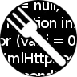

橙子冰棒の宝库
这个页面上的都是我见识到的一些优秀工具和网站，请各位不要客气直接拿走~
所有工具/网站均保证安全无毒，大家可以放心使用！
部分工具/网站仅供学习使用，下载后请依照官方要求执行删除！
LDTools
图吧工具箱
Ventory
超级方便的U盘启动盘工具，只要随便把ISO文件往U盘里面一丢就行~
已收录于LDTools。
进入官网
HEU KMS Activator
史上功能最丰富的Windows及Office激活工具！
进入官网
Office Tool Plus
快速部署各种Office软件，再也不用到微软官网苦苦搜寻啦！
进入官网
Steam Community 302
本地反代工具，能够加速Steam、Github和微软登录等，实测效果比UsbEAm Hosts Editor好！强推！
进入官网
SauceNAO
快速根据本地图片获取P站和小蓝鸟上的原图位置。
进入官网
Greasyfork

Tampermonkey（油猴）脚本的大型下载站，收录了大量脚本且有明确分类。
使用前请先在Edge或Chrome浏览器中安装Tampermonkey插件。
进入官网
Watt Toolkit
增加Steam游玩体验的免费工具包，提供加速功能，适用于PVP玩家。
进入官网
UsbEAm Hosts Editor
图形化的Hosts检测与编辑工具，内置数百个包括从Steam到Github各类网站的CDN节点信息，快速解决DNS污染！
官网
一些官网列表
下列为部分常用软件和网站的官网，其中有一些容易被假冒，另一些比较难找。可以直接点击跳转。
- Steam官网（可能需要加速）
- 我的世界国际版官网（不要点击弹窗中大大的绿色按钮！否则会跳转到网易版官网！）
- 我的世界国际版目前可能无法在中国大陆地区通过网页购买，请查看帮助文档
- Github（需要加速）